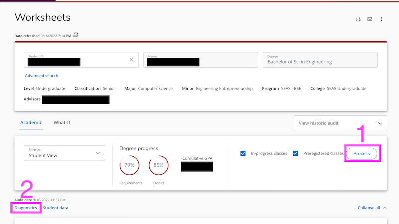

This page uses information from DegreeWorks. Everything runs in the browser; no student information is stored locally or remotely.
- You must be on-campus or on the VPN to access DegreeWorks.
- Visit DegreeWorks and lookup a student by name or PennID
-
Click the Process button to ensure the degree audit uses the most-recent courses and
degree requirements. Then, click the Diagnostics link to open the Diagnostics Report
page.

- On the Diagnostics Report page, select all then copy (Ctrl-A, Ctrl-C) the contents
into the textbox below.
- For Accelerated Masters students, you should copy+paste their Master's Diagnostics Report
as well as their undergrad Diagnostics Report (the order doesn't matter).
- Currently (as of September 2022), graduate courses taken in Fall 2022 appear only on
the Master's degree worksheet, even though the student may intend to use them toward
undergrad degree requirements.
- Click the blue apply courses to requirements button
- Report issues to devietti@cis.upenn.edu,
happy to add folks to the private GitHub repo as well.
The code is written in TypeScript.